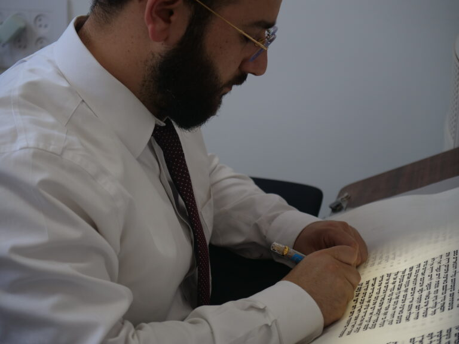

כתיבת האותיות האחרונות שבתורה
כתיבת האותיות האחרונות שבתורה
מקוטעות או חלולות והשלמת הסופר בכתיבה ברוב עם
רוצה לקבל תכנים בתורת הסת"ם ישירות למייל?
שלח הודעה עכשיו לכתובת Y0548431060@GMAIL.COM
כתיבת האותיות האחרונות שבתורה
השבוע נדבר על תופעה מוכרת בסיום כתיבת ספר תורה — אותיות חלולות או מפוסקות, ומה עומד מאחורי המנהג הזה למעשה.
מקור המנהג והזהירות הנדרשת
מנהג ישראל להניח בסוף ספר התורה אותיות שאינן גמורות, כדי לכבד את המשתתפים בסיום ולחבב את המצוה על הציבור.
מנהג זה הוזכר בדברי הפוסקים, אך בצידו הודגשה הזהירות שלא יכתבו את האותיות אנשים הפסולים לכתיבת סת"ם, כמחללי שבתות ועוד.
ואפילו מעדת היראים והשלימים, כגון קטן או מי שיש ספק בכשרותו לכתיבה כשמאלי העושה מלאכתו בימין, או אדם שלא טבל, וכדומה.
הארות על מנהג חילוק האותיות
עוד העירו הפוסקים על עצם המנהג. בספר משנת אברהם (פ"א) כתב שיש מקום לפקפק בו משלושה טעמים:
א. מדברי הש"ך (חו"מ סי' שפב) שאין ראוי למסור מצוה לאחרים כאשר אפשר לקיימה בעצמו.
ב. מצד שאלת השותפות במצוה.
ג. מדברי הט"ז (יו"ד סי' רעה) שיש להיזהר שלא ייראה הספר כמנומר כאשר אותיות שונות נכתבות בידי אנשים רבים.
ואף על פי כן סיים שמנהג ישראל תורה ויש להם על מי לסמוך, משום ששלוחו של אדם כמותו והמצוה נקראת על שם גומרה, ולכן נכון שבעל הספר יסיים לפחות את האות האחרונה.
מתוך כך התפתחו שני מנהגים – מקוטעת וחלולה
יש שנהגו להשאיר את האות מקוטעת, ויש שנהגו להשאיר את האות חלולה, שקווי האות שלמים ורק פנים האות ריק מדיו.
ההבדל ביניהם יסודי
אות מקוטעת ודאי פסולה, ואין בזה מחלוקת.
לעומת זאת, באות חלולה נחלקו האחרונים. יש שהחמירו, כגון שו"ת יד יצחק (ח"ג סי' רסז) ומנחת יחיאל (ח"ג סי' מט), אולם רוב האחרונים העלו שעיקר הדין שאות חלולה כשירה, מפני שאין שיעור לעובי האות, כך כתבו אמרי שפר, שואל ומשיב ומשנת הסופר ועוד, וכן עיקר.
מכאן נולדה הנפקא מינה המעשית
כאשר נותנים לאדם שאינו כשר להשלים אות מקוטעת, הוא יוצר את גוף האות והספר נפסל.
אך כאשר האות חלולה גוף האות כבר קיים, ולכן יש שכתבו שעדיף להשתמש בדרך זו כדי לצמצם את הסיכון, וכך הכריע למעשה ילקוט יוסף (סי' לב).
אלא שגם באות חלולה נדרשת זהירות
עוד העירו האחרונים שאם הממלא מעביר את הקולמוס על קווי האות עצמם, נמצא שהוא כותב על גבי כתב קיים, ויש בזה חשש של פסול, כן העיר הרב דברי מלכיאל (ח"ד סי' צ).
המסקנה למעשה
הדרך הבטוחה ביותר היא שהסופר בלבד יכתוב, והמשתתף יחזיק בידו — וכך מתקיימים גם כבוד הציבור וגם כשרות הספר, ואז אפשר להמשיך ולקיים את שני המנהגים בלי חשש, לעשות אותיות חלולות או אותיות מפוסקות.
לצורך המחשה מעשית של הדברים, מצורף סרטון חדש ומרתק!!!.
שנזכה לעשות נחת רוח להשם יתברך.
בברכה
יוחאי אוחיון
מלמד סופרים
